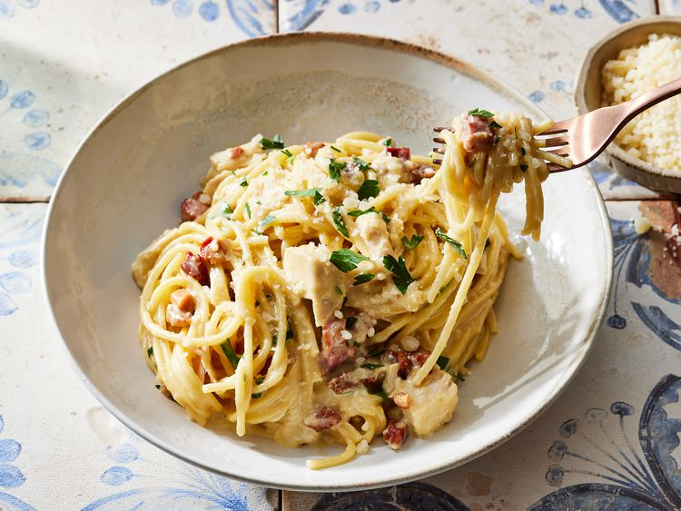

Chicken Carbonara

This chicken carbonara pasta bake is the perfect Sunday dinner choice for the whole family.
Serve with a side of roasted vegetables, a salad, and some crusty bread to soak up extra sauce.
Ingredients
- Pancetta
- Spaghetti
- Egg Yolks
- Parmesan
Steps
- Heat a skillet over medium heat.
- Add one tablespoon of oil and the chicken breast.
- Cook for about 16 minutes, flipping halfway, until an instant
read thermometer registers 170 degrees F.
Home Page